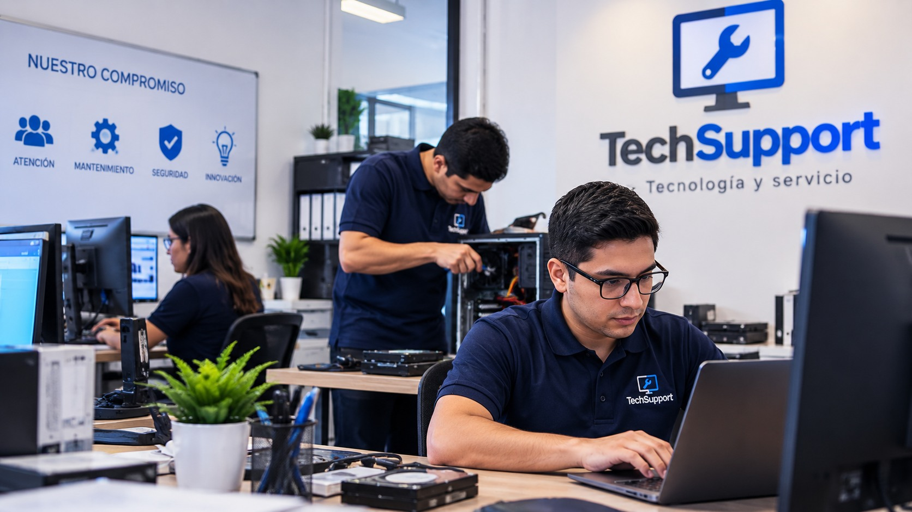

Historia
TechSupport es una propuesta académica enfocada en soporte técnico, mantenimiento y soluciones informáticas para contribuir a la continuidad de las operaciones.
Nuestro proyecto busca organizar la atención tecnológica y brindar orientación a los usuarios.